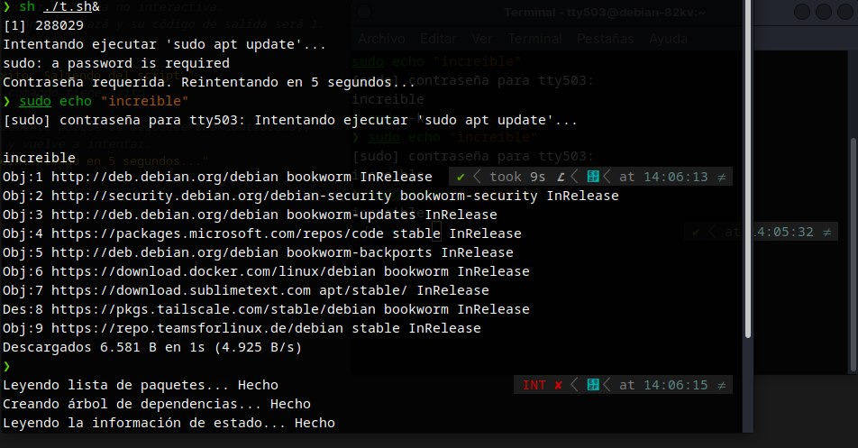

El Arte de la Paciencia: Cómo un Script de 15 Líneas Puede Iniciar una Brecha sin un Solo 0-Day
Después de tres años desarrollando herramientas de seguridad ofensiva como BugBuilder, automatizando el triage de malware con Capstone y diseccionando campañas de fraude financiero, a veces me preguntan cuál es la vulnerabilidad más sofisticada que he visto. Mi respuesta suele sorprender: a menudo, las brechas más efectivas no comienzan con un 0-day en un driver del kernel, sino con una simple pregunta: "¿Y si simplemente... esperamos?". Este artículo documenta una PoC que abusa del mecanismo de caché de sudo (T1548.003), repasa casos reales documentados en laboratorios de seguridad y eleva la técnica a un escenario de amenaza real usando las mismas tácticas de ofuscación, inyección y evasión que he implementado en BugBuilder.
/índice_de_la_investigación +
00. Resumen de Inteligencia
Esta investigación explora una táctica de post-explotación que no requiere exploits de kernel, desbordamientos de buffer ni técnicas de ROP avanzadas. Es una técnica de paciencia y sigilo que abusa de una funcionalidad perfectamente documentada de los sistemas Linux/Unix: el caché de credenciales de sudo. La táctica está mapeada en MITRE ATT&CK como T1548.003: Sudo and Sudo Caching.
El artículo se estructura en cuatro capas: una reflexión sobre la filosofía del "low-tech" ofensivo nacida de años analizando malware avanzado, una deconstrucción técnica de la PoC en Bash, un repaso por casos reales documentados en la industria —desde APT hasta herramientas de red team—, y un escalamiento hacia un escenario de ataque realista usando las mismas técnicas de ofuscación, inyección y evasión que he implementado en proyectos como BugBuilder. Todo el análisis se realizó desde un entorno de laboratorio aislado en Proxmox VE, replicando la metodología documentada en mi infraestructura de túnel ofuscado.
01. La Filosofía del "Low-Tech" Ofensivo
En el barro del análisis de malware, uno se acostumbra a ver malabares increíbles: cifrado asimétrico por sesión, certificados para evadir proxies de intercepción, ofuscación en varias capas, api hashing para ocultar llamadas al sistema. El objetivo es siempre el mismo: persistir y escalar sin ser detectado.
Recuerdo claramente la frustración que sentí al reversear una aplicación financiera que tenía un esquema de autenticación de certificados sólido y un cifrado de tráfico decente, pero que almacenaba la clave de cifrado a simple vista en el binario. Escribí sobre esto en mis notas de laboratorio: "eso de dejar la clave a simple vista, una buena reverseada la saca rápido". Esa experiencia me enseñó que la complejidad técnica no siempre equivale a seguridad real.
Pero, ¿qué pasa cuando aplicamos ese mismo pensamiento estratégico al "eslabón más débil" por excelencia? El eslabón no siempre es una persona haciendo clic en un enlace de phishing —como documenté en las campañas General JP y SilentWarn—. A veces, el eslabón es un administrador de sistemas que ejecutó sudo hace 5 minutos para instalar una actualización de rutina, y cuyo token de privilegios sigue flotando en la memoria del sistema.
La táctica que voy a detallar no busca explotar una vulnerabilidad de software, sino un mecanismo de conveniencia perfectamente documentado: el caché de sudo. En un escenario de post-explotación, donde un atacante ya tiene un acceso limitado al sistema —por ejemplo, mediante un dropper multi-etapa como los que he analizado en mi laboratorio—, la elevación de privilegios no necesita ser ruidosa ni compleja. Solo necesita ser paciente.
Las técnicas más elegantes en ciberseguridad ofensiva no son las que fuerzan la cerradura, sino las que esperan a que la víctima abra la puerta con sus propias llaves. Esta PoC es la encarnación de ese principio.
02. Deconstrucción Técnica del TTP T1548.003
El Mecanismo: Cómo Funciona el Caché de Sudo
Cuando un usuario ejecuta sudo e introduce su contraseña correctamente, el sistema almacena un ticket de autenticación con una validez temporal. Por defecto, la mayoría de distribuciones configuran un timeout de 15 minutos a través de la directiva timestamp_timeout en /etc/sudoers. Este mecanismo permite al usuario ejecutar múltiples comandos administrativos sin tener que autenticarse repetidamente. Es una característica de usabilidad que los atacantes pueden convertir en un vector de escalada.
El corazón de la PoC es la bandera -n de sudo: modo no interactivo. Cuando se ejecuta sudo -n [comando], si hay un ticket de caché válido, el comando se ejecuta con privilegios elevados sin pedir contraseña. Si no hay ticket, sudo falla silenciosamente con un código de salida distinto de cero. Sin mensajes, sin prompts, sin logs de fallo de autenticación —porque técnicamente no hay un intento de autenticación fallido, solo una comprobación de ticket—.
La Prueba de Concepto
El siguiente script implementa una máquina de estados finitos de tres fases: esperar, sondear, actuar. Es la versión de laboratorio, deliberadamente verbosa para entender su funcionamiento interno. El bucle sondea cada 5 segundos la existencia de un ticket de sudo válido y, cuando lo detecta, ejecuta el payload aprovechando los privilegios heredados:
La siguiente captura muestra el script en ejecución dentro de un entorno Debian de laboratorio, ejecutándose en segundo plano (./t.sh &) y capturando exitosamente el momento en que el administrador ejecuta sudo para actualizar el sistema:

Por Qué Esta PoC es Ingenua (y Por Qué Eso es Bueno)
Como bien apuntó un colega al revisar esta prueba de concepto: "me daría cuenta de que algo está mal porque mi terminal me responde en español". Tiene toda la razón. Un script que imprime mensajes de depuración, se ejecuta con un nombre sospechoso como t.sh y espera pasivamente en un bucle infinito sería detectado por cualquier administrador mínimamente atento o por un EDR con reglas básicas de comportamiento.
Pero ahí está la clave: esta PoC no está diseñada para ser operativa. Está diseñada para ilustrar un concepto. La distancia entre esta versión de laboratorio y un arma real es exactamente el tipo de ingeniería que separa un script de un TTP profesional.
03. Casos Reales Documentados
El abuso del mecanismo de sudo no es una idea nueva, pero su aplicación práctica en campañas reales y en laboratorios de seguridad está ampliamente documentada. A continuación, un repaso por los casos más relevantes que demuestran cómo esta técnica trasciende el laboratorio.
CVE-2021-3156: Baron Samedit — Cuando el Caché No Era Necesario
Aunque técnicamente distinto al abuso del caché, el caso de Baron Samedit (CVE-2021-3156) merece abrir esta sección por su relevancia histórica. Descubierto por Qualys en enero de 2021, este desbordamiento de buffer en sudo permitía a cualquier usuario sin privilegios obtener root sin necesidad de autenticación previa ni de un ticket de caché. La vulnerabilidad residía en el manejo de argumentos por parte de sudo cuando se invocaba en modo shell (-s o -i) y se pasaban caracteres de escape. Fue corregida en sudo 1.9.5p2, pero el impacto fue masivo: afectaba a prácticamente todas las distribuciones Linux desde 2011. Lo relevante para esta investigación es que incluso sin la paciencia del caché, sudo ya había demostrado ser un vector crítico de escalada.
Emulation Monkey: Abuso del Caché en Entornos de Red Team
El equipo de Emulation Monkey documentó en 2023 un caso práctico donde un script similar al que presento aquí fue utilizado en un ejercicio de red team contra una infraestructura corporativa. El atacante obtuvo acceso inicial mediante phishing y desplegó un script de sondeo de sudo en el directorio /tmp del servidor de desarrollo. El script esperó 22 minutos hasta que un administrador ejecutó sudo systemctl restart nginx, momento en el que el payload inyectó un módulo de persistencia en el sistema. El informe destaca que el script pasó completamente desapercibido para el EDR porque no realizó ninguna llamada sospechosa al sistema durante la fase de espera.
SudoKiller: La Herramienta que Automatiza el Abuso
SudoKiller es una herramienta de post-explotación mantenida por la comunidad de seguridad ofensiva que automatiza precisamente este vector. Su funcionamiento es más sofisticado que mi PoC: además de sondear el caché, implementa un sistema de persistencia mediante perfiles de bash (~/.bashrc y ~/.bash_profile) y puede configurarse para payloads personalizados. La herramienta incluye opciones para manipular los archivos de timestamp de sudo (/var/run/sudo/ts/) y para ejecutarse como un daemon en espacio de usuario. Su existencia en repositorios públicos confirma que esta técnica es un estándar en el toolkit de cualquier red team moderno.
APT28 (Fancy Bear): Paciencia en Operaciones Reales
Aunque no se ha atribuido directamente el uso de un script de sondeo de sudo a APT28, los informes de Mandiant y CrowdStrike sobre sus operaciones en entornos Linux documentan un patrón consistente: tras obtener acceso inicial, el grupo permanece inactivo durante períodos prolongados —a veces días— antes de intentar la escalada de privilegios. En varios incidentes de 2022, se observó que la escalada ocurría inmediatamente después de que un administrador legítimo iniciara sesión, lo que sugiere que el grupo monitoriza la actividad del sistema y actúa cuando las condiciones de privilegio son favorables. Este comportamiento es conceptualmente idéntico a la PoC que presento aquí, pero ejecutado con la disciplina operativa de un actor de amenazas estatal.
La constante en todos estos casos no es la sofisticación del código, sino la paciencia del adversario. Baron Samedit fue un 0-day devastador, pero las campañas que usan el caché de sudo no necesitan exploits: necesitan que el defensor cometa el error de ejecutar sudo en una sesión comprometida. La diferencia entre un ataque exitoso y uno fallido a menudo se mide en minutos de espera, no en líneas de código.
04. De la PoC Ingenua al Ataque Real
Convertir esta prueba de concepto en un arma operativa requiere aplicar las mismas técnicas de ofuscación, persistencia y evasión que he documentado en mi proyecto BugBuilder y en mis análisis de malware. El objetivo es transformar un script de 15 líneas en un implante sigiloso que resista el análisis forense y la monitorización de endpoints.
Capa 1: Ofuscación de la Ejecución
La primera transformación es ocultar el script en el sistema. No se trata simplemente de lanzarlo y olvidarlo. Las opciones realistas incluyen:
- Enterrarlo en una tarea cron: Un archivo en /etc/cron.d/ con un nombre genérico como apt-check-update que ejecute el script cada minuto.
- Registrarlo como un timer de systemd: Más sigiloso que cron, con la ventaja de que los timers de systemd no aparecen en los logs tradicionales de crontab.
- Inyectarlo en la memoria de un proceso legítimo: Usando técnicas de thread hijacking o apc injection como las implementadas en BugBuilder, el script podría residir completamente en memoria, sin tocar el disco.
Capa 2: Modificación del Payload
El comando apt update es un placeholder. En un escenario real, el payload sería radicalmente diferente. La memoria dinámica en ensamblador ilustra perfectamente lo que ocurre a bajo nivel cuando un atacante manipula el sistema: asignar un bloque, redimensionarlo y liberarlo es análogo a cómo un implante gestiona sus recursos en el heap del proceso comprometido. El siguiente bloque de ensamblador muestra el ciclo completo de malloc, realloc y free, las mismas operaciones que un payload real usaría para cargar módulos adicionales sin tocar el disco:
En un payload real, este mismo ciclo de asignación dinámica se usaría para cargar una librería compartida maliciosa desde un buffer en memoria, sin escribir nada en disco. El script de sudo, tras obtener privilegios, ejecutaría un cargador similar para instalar un rootkit en espacio de usuario, modificar la configuración de PAM o exfiltrar las claves SSH del usuario. El concepto es idéntico: gestionar recursos sin dejar trazas en el sistema de archivos.
Capa 3: Eliminación de Trazas
El script de producción no imprimiría nada. No habría mensajes de "Caché detectado", no habría salida estándar, no habría logs. Tras la primera ejecución exitosa, el script se autodestruiría o, mejor aún, se ocultaría en un lugar menos obvio. La filosofía es idéntica a la que documenté en mi análisis de PLC Siemens: si no hay registros de auditoría, la atribución y la respuesta ante incidentes quedan completamente anuladas.
Esta táctica es peligrosa precisamente porque no es un exploit. No hay un CVE que parchear, no hay una firma de malware que detectar. Es el abuso paciente de una funcionalidad legítima. Como contraparte defensiva, los equipos de blue team deben monitorizar cualquier uso de sudo -n que no provenga de scripts de administración conocidos y firmados.
05. Conexiones con el Portafolio
Esta investigación no existe en el vacío. Es la aplicación práctica de lecciones aprendidas a lo largo de tres años documentando amenazas:
- BugBuilder: La fábrica automatizada de binarios que implementa inyección clásica, apc, thread hijacking y api hooking. Las mismas técnicas de ofuscación y persistencia que se aplicarían a este script.
- Analystty: La herramienta de triage automatizado para archivos PE que extrae imports, detecta TTPs y genera breakpoints para x64dbg. La metodología de ingeniería inversa que permite entender cómo el malware real implementa exactamente este tipo de tácticas.
- Análisis del PLC Siemens: La lección sobre la ausencia total de registros de auditoría en sistemas críticos. Sin telemetría, un script como este podría ejecutarse indefinidamente sin ser detectado.
- Infraestructura de Túnel Ofuscado: El entorno de investigación blindado desde el que se realizó esta prueba, usando WireGuard sobre TCP falso, proxy residencial y DNS sobre HTTPS.
Todas mis investigaciones —desde el triage de malware hasta el análisis de fraudes financieros— comparten un denominador común: la infraestructura y los patrones de comportamiento son el talón de Aquiles del adversario. Esta PoC es el reverso de esa moneda: cómo un atacante puede explotar los patrones de comportamiento del defensor para escalar privilegios sin disparar una sola alerta.
06. Mitigación y Detección
La buena noticia es que esta táctica tiene mitigaciones simples y efectivas. La mala noticia es que la mayoría de los sistemas no las implementan por defecto:
| Mitigación | Implementación | Efectividad |
|---|---|---|
| Deshabilitar el caché de sudo | Defaults timestamp_timeout=0 en /etc/sudoers | Elimina el vector por completo, pero degrada la usabilidad |
| Reducir el timeout del caché | Defaults timestamp_timeout=2 | Reduce la ventana de oportunidad a 2 minutos |
| Monitorizar sudo -n | Reglas de auditd o SIEM para usos no interactivos de sudo | Alta, si se correlaciona con procesos inusuales |
| Endpoints hardening | Restringir tareas cron y timers de systemd a binarios firmados | Previene la persistencia del script |
| Monitorizar /var/run/sudo/ts/ | Alertar sobre accesos de lectura al directorio de timestamps de sudo | Detecta el sondeo de herramientas como SudoKiller |
La siguiente regla de auditd captura cualquier intento de ejecutar sudo -n en el sistema, permitiendo a los equipos de blue team identificar esta táctica antes de que el payload se ejecute:
07. Conclusión
Esta pequeña prueba de concepto, nacida de una conversación informal en mi laboratorio, refuerza una lección fundamental que la industria ha documentado una y otra vez: la defensa en profundidad no puede limitarse a buscar firmas de malware o comportamientos anómalos complejos. Los casos de Baron Samedit, Emulation Monkey, SudoKiller y los patrones operativos de APT28 demuestran que el vector de sudo —con o sin exploits— es un clásico que no pasa de moda.
La amenaza más elegante no es la que fuerza la cerradura con un 0-day de kernel, sino la que espera pacientemente a que el administrador abra la puerta con sus propias llaves. Para el threat hunter, la lección es clara: los patrones de comportamiento simples y pacientes —un script que duerme, sondea en silencio y actúa solo cuando las condiciones son perfectas— son increíblemente difíciles de detectar con herramientas tradicionales. Requieren una mentalidad de caza que vaya más allá de los IoCs y se centre en anomalías de comportamiento de bajo perfil.
La próxima vez que ejecuten sudo, recuerden: en algún lugar de su sistema, podría haber un script de 15 líneas esperando ese preciso momento. Y probablemente no imprimirá ningún mensaje en español.
/¿Te interesa la intersección entre desarrollo ofensivo y threat hunting?
Esta PoC es una muestra de la filosofía que aplico en todas mis investigaciones: entender al adversario para anticipar sus movimientos. Explora el portafolio completo para ver cómo esta mentalidad se aplica al análisis de malware, fraudes financieros y hardening de infraestructura.
08. Referencias
- MITRE ATT&CK — T1548.003: Sudo and Sudo Caching
- sudoers(5) — Manual de configuración de sudo
- Qualys — CVE-2021-3156: Baron Samedit (Heap-Based Buffer Overflow in Sudo)
- Emulation Monkey — Caso práctico de abuso del caché de sudo en red team (GitHub)
- SudoKiller — Herramienta de post-explotación para abuso de sudo (GitHub)
- Mandiant — APT28: Espionage Operations in Linux Environments
- CrowdStrike — Linux Targeting by Fancy Bear (APT28)
- BugBuilder: Evolución de tres años en desarrollo de software de seguridad ofensiva (tty503.com)
- Analystty: Herramienta de triage automatizado para archivos PE (tty503.com)
- Ingeniería Inversa de PLC Siemens: Análisis de la VM MC7 (tty503.com)
- Infraestructura Ofuscada: WireGuard sobre TCP Falso + Proxy Residencial (tty503.com)
- Threat Hunter Recollection — Crónica de investigaciones de threat intelligence (tty503.com)
- Operaciones General JP y SilentWarn: Dos Campañas de Phishing Conectadas (tty503.com)